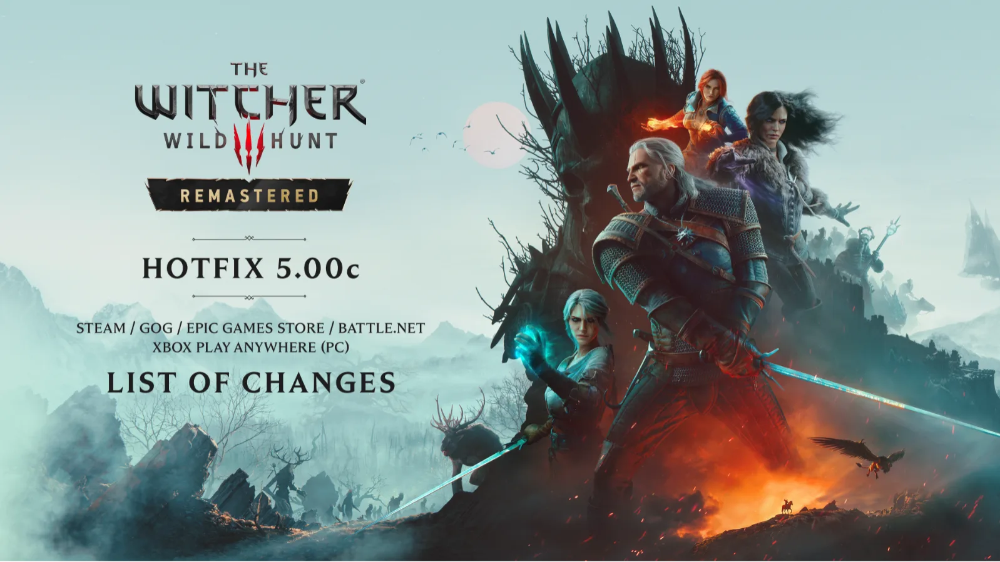
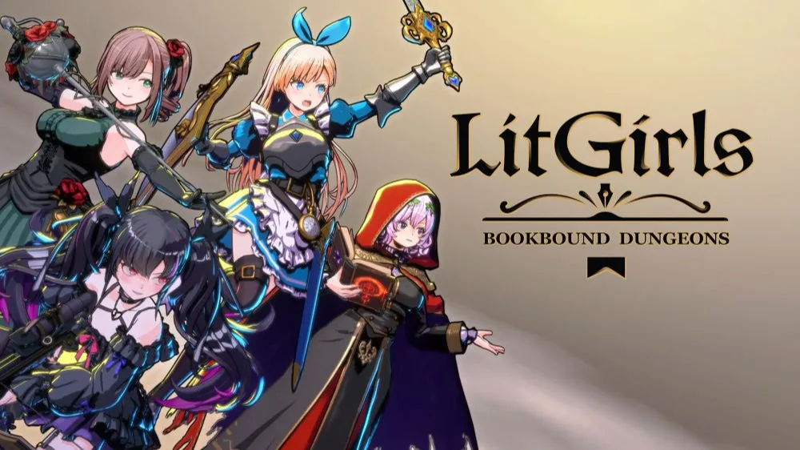

1 de octubre de 2026
1 de octubre de 2026
Naughty Dog estaría trabajando en un nuevo Uncharted que podría recuperar a Nathan Drake
Un nuevo reporte asegura que Naughty Dog estaría desarrollando un nuevo episodio de Uncharted, que sería el próximo gran proyecto del estudio después de Intergalactic: The Heretic Prophet. La información apunta a la posible participación de Nathan Drake y su hija Cassie, aunque Sony todavía no anunció oficialmente el juego.
1 de octubre de 2026Grasshopper Manufacture vuelve a ser independiente después de cinco años con NetEase
El estudio japonés liderado por Suda51 dejó oficialmente de pertenecer a NetEase y recuperó su independencia. La separación se produce después de cinco años bajo la compañía china, período durante el cual el estudio lanzó proyectos como Shadows of the Damned: Hella Remastered y Romeo is a Dead Man.

1 de octubre de 2026The Witcher 3 Remastered recibe un nuevo parche con mejoras para DLSS e iluminación
CD Projekt Red lanzó una nueva actualización para The Witcher 3: Wild Hunt Remastered que corrige problemas de DLSS en PC, realiza ajustes de iluminación y mejora la paridad entre las versiones de consola y PC. El estudio también prepara un hotfix para solucionar problemas de guardado detectados por algunos jugadores.
 1 de octubre de 2026
1 de octubre de 2026
House of the Dead vuelve a los arcades con una experiencia de realidad virtual
SEGA Amusements anticipó un nuevo proyecto de The House of the Dead para arcades que utilizará tecnología de realidad virtual. El título, aparentemente llamado House of the Dead: Reawakened, tendrá un gabinete inspirado en una mansión gótica y será presentado públicamente durante la IAAPA Expo de noviembre.
 1 de octubre de 2026
1 de octubre de 2026
Castlevania: Belmont's Curse ya tiene demo y permite transferir la partida al juego completo
Konami lanzó una demo gratuita de Castlevania: Belmont's Curse que permite jugar el comienzo de la aventura y transferir el progreso a la versión completa. El nuevo juego protagonizado por Rose Belmont llegará el 15 de octubre a PC, PS5, Xbox Series X|S y Nintendo Switch.

1 de octubre de 2026LitGirls: Bookbound Dungeons mezcla literatura clásica, anime y dungeon crawling
DANGEN Entertainment y NANAIRO ENTERPRISE anunciaron un nuevo dungeon crawler que transforma personajes y mundos de la literatura clásica en anime. LitGirls: Bookbound Dungeons combinará exploración de mazmorras, combate por turnos, gestión de recursos y desarrollo de una base.
 1 de octubre de 2026
1 de octubre de 2026
Football Manager 27 ya tiene fecha de lanzamiento
SEGA y Sports Interactive confirmaron que Football Manager 27 llegará el 10 de noviembre a PC, PS5, Xbox Series, iOS y Android. La nueva edición también estará disponible desde el primer día mediante Game Pass, mientras que la versión móvil llegará a través de Netflix.
 1 de octubre de 2026
1 de octubre de 2026
Monster Hunter Outlanders llegará a móviles el 29 de octubre
Capcom y TiMi Studio Group confirmaron que Monster Hunter Outlanders, el nuevo RPG de acción y supervivencia basado en la popular franquicia de cacería, llegará a iOS y Android el 29 de octubre. El juego será gratuito y ofrecerá un nuevo mundo, personajes, compañeros y monstruos.
 30 de septiembre de 2026
30 de septiembre de 2026
Silent Hill: Townfall recibirá un parche para hacer menos frustrantes las secciones contra The Weight
Screen Burn confirmó que está trabajando en un nuevo parche para Silent Hill: Townfall que modificará el balance de las secciones de sigilo protagonizadas por The Weight. El enemigo fue uno de los aspectos más cuestionados por jugadores y análisis, debido a su comportamiento, su capacidad para detectar al protagonista y las muertes instantáneas.